This tutorial aims to show how you can use CocosBuilder together with cocos2d-iphone to create character animations, game maps and interfaces. CocosBuilder has been used by Zynga to produce games such as Pet Dream House and Zynga Slots. Currently, a number of games using CocosBuilder is in production at Zynga and as CocosBuilder is released as open source (MIT License) it is also widely used by other mobile game developers.
This tutorial assumes that you are familiar with cocos2d-iphone, or are at least familiar with programming in Objective-C. If you want to get started with cocos2d, there are some great tutorials over at the cocos2d website. Before you start make sure that you have installed CocosBuilder (this tutorial is using version 2.1 beta) and cocos2d (use version 2.0 or later). You can find the finished tutorial at GitHub.
The game we will be making is about the tiny Cocos Dragon. The Cocos Dragon has very small wings so he doesn’t fly very well, to get some extra speed he will need to collect coins while avoiding the surrounding bombs. You can see the game in action in this youtube clip.
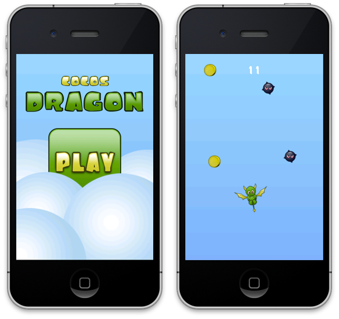
For simplicity of testing the game in the iOS simulator the game is controlled by touches. If you make a real game like this you probably want to provide the option of controlling it by the accelerometer too.
Start by making a new Xcode project and select cocos2d iOS (make sure you have installed the cocos2d-iphone templates for this option to show up). Name the project CocosDragon, set the device family to iPhone and save it in a convenient location.
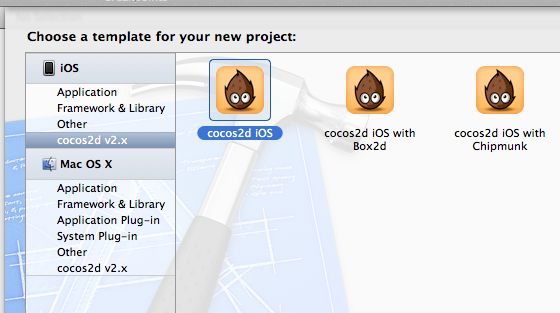
Download the image resources for CocosDragon from here, unzip them and place them in your project’s Resources folder.
Now we also need to create a CocosBuilder project for our game. Open CocosBuilder and select New Project from the File menu. Name the project CocosDragon and save it in the Resources folder of your Xcode project. The resources you downloaded earlier should now show up in the left hand project view. CocosBuilder will also add a few default resources to the folder (they are in a folder called ccbResources) and opens up the HelloCocosBuilder.ccb file. As we are not going to use the HelloCocosBuilder file for this project you can close it in CocosBuilder, then remove it from the Resources folder in Finder.
We will start by making all the interface files for Cocos Dragon, then we will move on to connecting them to our code. The first file we will create is the main menu. With the CocosDragon project open in CocosBuilder, select New File… from the File menu. We are going to make this game for iPhone portrait mode only, so check the iPhone Portrait in the resolutions settings and make sure the root object type is CCLayer with the full screen option checked.
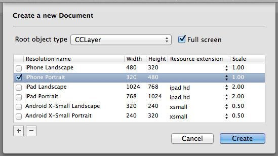
Click Create, then name the file MainMenuScene and save it in the Resources folder. A new empty document will open up in CocosBuilder.
For the main menu we will use a gradient background, a logo, a play button and a couple of clouds that we will animate. Let’s start by adding the gradient background. Click the CCLayerGradient button in the toolbar at the top of the window.
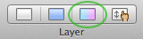
We want the gradient layer to fill the whole screen. With the layer selected, set the content size to % and a width and height of 100 x 100.
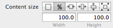
Let’s also change the colors to something that will better fit our game. Click the start color and end color and set the colors to the following values using the RGB sliders.
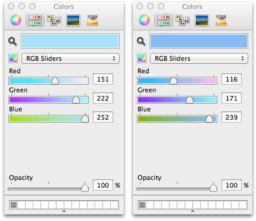
Continue by adding a logo to our menu scene. From the left hand project view, drag the file called logo.png onto the canvas area. Your file should now look something like this.
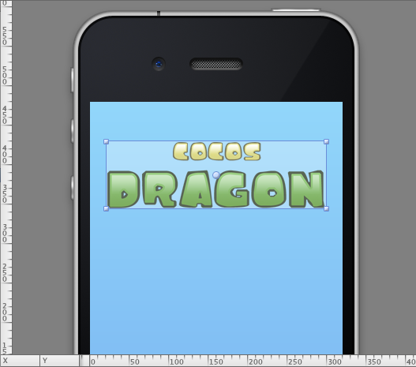
The main menu scene will have a nice animation when we enter it, we will start by animating the logo. First, set the length of the animation by clicking on the time display below the canvas area. Set the length of the timeline to 2 seconds, in the window that pops up.
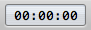
Now, let’s add some keyframes to the logo sprite. Drag the time marker to the end of the animation (the time display should display 00:02:00) and make sure that the logo is selected. Choose Insert Keyframe / Position from the Animation menu, or press the P key. In the timeline view, the logo sprite will fold out and display the added keyframe.
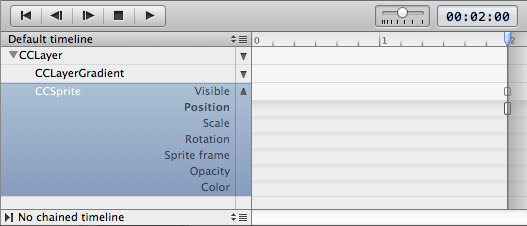
Once a position keyframe has been added to the timeline for a node, we can automatically add new keyframes by just moving the node to a new position. First, move the time marker back to the beginning of the animation (the time display will display 00:00:00). Then drag the logo in the canvas area out of the top of the visible area (you can hold down the shift key while dragging to make sure it will be moved in a straight line). When doing this a new keyframe will automatically be added at the beginning of the timeline and we get a smooth animation between the keyframes.
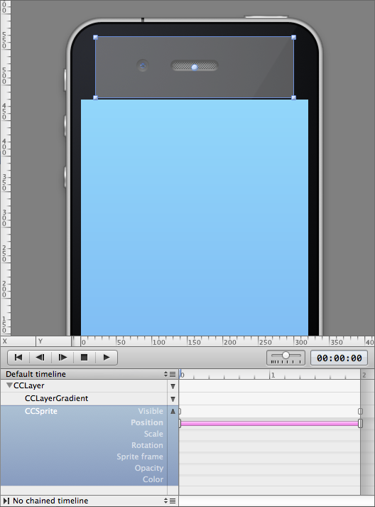
You can test the animation by clicking the Play button. You can also scrub the animation by moving the timeline marker back and forth.
The animation we’ve just did is nice and smooth, but let’s spice it up a bit. Right click the interpolation line between the keyframes and choose the Bounce out option. This will add an easing to our animation. Play back the animation, and notice how the logo now will bounce into view.
Ok, we got the logo covered but we will also need a button to start the game. We will do this by using a CCMenu and a CCMenuItemImage. Start by adding the menu, click the CCMenu button in the toolbar.
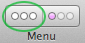
A CCMenu will be added to your file. With the CCMenu still selected, click the CCMenuItemImage button in the toolbar (it’s the one next to the right of CCMenu). The CCMenuItemImage will show up with a placeholder image at the bottom left corner of the canvas area.
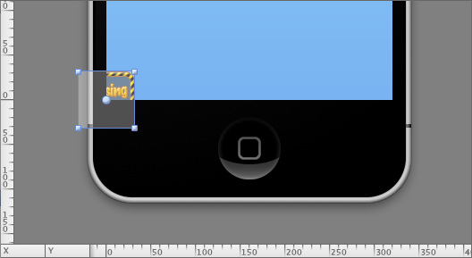
Move it to the middle of the screen by dragging it, entering values in the inspector, or using Cmd-arrowkeys or Cmd-shift-arrowkeys. With the CCMenuItemImage selected, select the images you want to use for the different states of the menu item in the inspector. For normal and disabled we will use play-button.png and for selected we will use play-button-down.png.
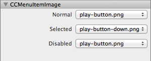
We now got a main menu scene with a logo and a play button, but it still looks a little bit empty. To fix that we will add a couple of clouds to the scene. From the project view, drag a couple of clouds to the canvas area. You can resize the clouds by dragging the corner handles of them while they are selected. Move the clouds back and forward (z-order) by dragging and dropping them in the timeline view or choosing Arrange / Bring Forward or Arrange / Send Backward in the Object menu. You should end up with something that looks like this.
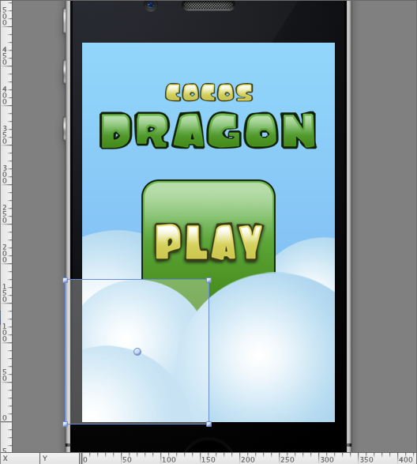
Now let’s also add intro animations to the clouds. We will do this just like we did with the logo sprite. Move the timeline marker to the end of the animation. For each of the cloud and for the play button, add a position keyframe. You can do this by selecting each cloud and pressing the P key. When keyframes are added to all of the objects at the end of the animation, move the timeline marker to the beginning of the animation. Now drag each of the clouds and the button just outside of the visible area at the bottom of the screen. The clouds will not look so good with the bouncing easing applied to them, so we will go with something a bit smoother. Right click between the keyframes for each of the clouds and select Ease Out. This will cause the animations to slow down at the end and look smoother.
Try out the animation by clicking the play button. We now have a nice intro animation for our main menu scene. After the animation has finished playing the scene will be completely static. This is not too cool, so we will fix this next.
CocosBuilder has support for using multiple timelines. The timelines in a file can be chained in sequence, or different sequences can be played back from code. It’s even possible to smoothly tween between the different timelines in a file. We will use the multiple timelines to first have an intro animation, and then have an animation loop once the intro animation has finished playing.
Choose Edit Timelines… from the Animation menu. In the window that pops up, first rename the Default timeline to Intro. Then click the plus-sign to add a new timeline, rename the new timeline to Loop and click the Done button.
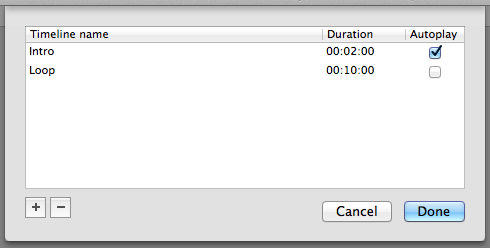
We now need to select the timeline we want to work with. Click on the timeline drop-down menu (see picture below), then select Timelines / Loop.
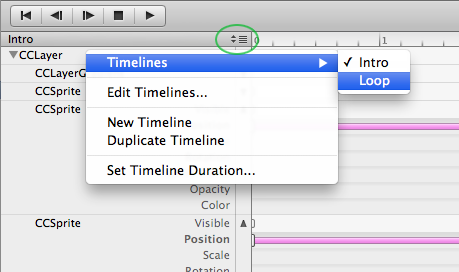
We now have a new fresh timeline, without any keyframes. By default it is 10 seconds long, which will be perfect for our loop. To be able to see the complete animation at once, you can drag the scale slider to the left.
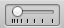
The loop animation will be quite subtle, but still giving some life to the scene. Select one of the clouds, With the cloud selected, move the timeline marker to the start of the timeline and press the S key. This will add a keyframe for the scale property. Now, drag the timeline marker to the end of the animation and press the S key again. This will add a new keyframe at the end of the animation. Note that the line representing the interpolation in the timeline view will be slightly faded out. This is because both keyframes are identical and no animation is taking place. In this case this is good, because we want the animation to end exactly as it begins so that it will loop smoothly.
To add a new keyframe in-between the keyframe at the start of the animation and the one at the end, hold down the option key and click in the middle between the two keyframes. To focus on the newly created keyframe you can double click it. Now with the keyframe in focus, make the cloud a little bit bigger, either by entering a scale value in the inspector or by dragging the handles of the selection.
Play back the animation. You should see one of your clouds slowly getting a little bit bigger, then going back to normal. Let’s do this for all of the clouds. Select the all your keyframes by dragging a selection box around them. Optionally you can click each of the keyframes in turn with the shift key held down. With all keyframes selected, choose Copy from the Edit menu. Move the timeline marker to the beginning of the animation, select another of the clouds and select Paste from the Edit menu. Repeat this for all of the clouds (that doesn’t already have keyframes).
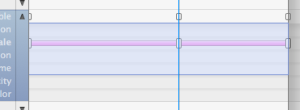
Play back the animation again. As you can see all clouds are now scaling, but they all scale at the same time which may look a little bit odd. Select each of the clouds, expand the timeline by pressing the little arrow key, and drag the middle keyframe back or forth. Set a different time for each of the cloud’s middle keyframes. It may take a little experimentation both with the times and the scale of the clouds to get it too look good.
Finally to make the timeline loop when we play it back in our code we need to use the chain timeline feature. Click the text that says No chained timeline in the bottom left corner of the timeline editor. Select Loop from the menu that pops up. This will make the timeline start playing again as soon as it has finished.
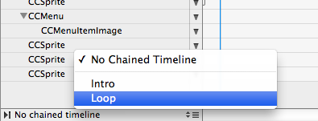
Now switch back to the Intro timeline (click the timeline drop-down menu icon and choose Timelines / Intro). Chain the Loop timeline to play right after the Intro timeline has finished. When we load the scene through our code it will automatically start playing the Intro, when it finishes it will directly start playing the Loop over and over again.
We are almost done with the main menu, the only thing left is to connect the interface file with our code. To do this, we will first need to set a custom class for the root node of the document. Select the root node (this will be the CCLayer in this file). In the inspector, set the custom class to MainMenuScene. We will later create the MainMenuScene in our code.
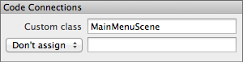
Select the the play button. Under CCMenuItem enter pressedPlay: in the selector text field and select Document root as the target. When we press the button in our game the pressedPlay: method of the root node of the document (i.e. the MainMenuScene) will be called.
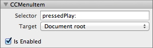
We will use the game scene to load everything we need for the actual game. It will also display the score. Select New File… from the File menu, use the same settings as you used for the MainMenuScene (CCLayer, full screen, iPhone portrait), name the file GameScene and save it in the Resources folder.
For the game, we will use the same background gradient as we used for the menu scene. Either create it again, or you can open the MainMenuScene by double clicking it in the project view and select the CCLayerGradient, copy it, switch back to your new file and paste it there.
Now click the CCLayer icon in the toolbar to add a layer to the scene. We will later use this empty layer to load a game level into from our code.
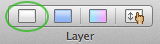
After the layer is added, we will add a label for displaying the current score of the game. Click the CCLabelTTF button in the toolbar.

Set the position to (160, 40), the font name to System Fonts / MarkerFelt-Wide the font size to 24, the dimensions to 100 x 40, the alignment to center and finally the label text to “0”.
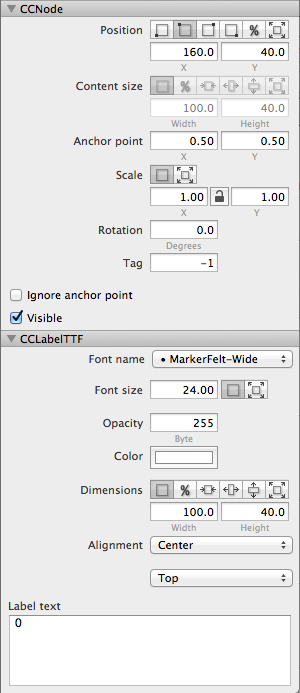
The game scene is almost complete, the only part left is to connect it to our code. Select the root node (the CCLayer) and set the custom class to GameScene. Then select the label, we will assign the label to a member variable of the root node class. Select Doc root var from the popup menu in Code Connections and set the name of the variable to scoreLabel.
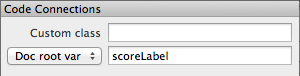
We also need to connect the empty layer we created so we can access it from the code. Select the layer, in Code Connections select Doc root var from the popup and set the name of the variable to levelLayer.
We are now done with the game scene, let’s move on to creating some game objects!
For our game we will use four types of game objects. The dragon, which is the main character of the game, coins, bombs and explosions. All of our game objects will sub class the GameObject class, which we will create later on. The GameObject in turn is a sub class of CCNode. Thus, all game object files we will create in CocosBuilder will sub class CCNode. (It would also be possible to create a plug-in for GameObject, but that would be a lot more work and not needed for this game.)
Let’s start by creating the most complicated game object – the dragon. Create a new file by choosing New File… from the File menu. Select CCNode as the root node object, deselect the full screen option and select the iPhone resolution.
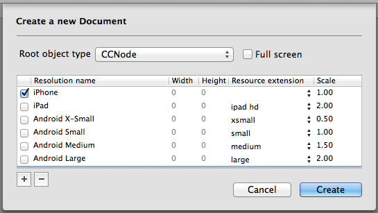
Select the root node (CCNode) and set the custom class to Dragon.
The dragon will be built from different moving parts, we will use a body and two wings. Start by adding the wings, as they will be behind the body. From the project view drag gameobjects.plist/dragon-wing.png to the canvas area. Set the position of the wing to (-8,4) and the anchor point to (0.84,0.094).
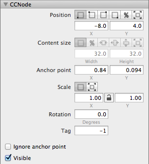
Now, add the body. Drag gameobjects.plist/dragon-body.png to the canvas area. Set the position of the body sprite to (0,0). Your file should now look like this:
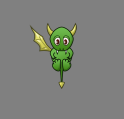
We will animate the single wing of the dragon, then duplicate it and flip it over to form an animated pair of wings. First, set the length of the timeline to 1 second. Then, select the wing, move the timeline marker to the beginning of the timeline and add a keyframe for rotation by pressing the R key. Move the timeline marker to the end of the timeline and add another rotation keyframe. Now move the timeline marker to the middle of the timeline (00:00:15). Rotate the wing downwards, you can do this by dragging one of the selection handles while holding down the option key. Rotate the wing to about -80 degrees.
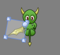
We now have a flapping wing, but let’s make it a little bit more funky by adding the Bounce Out easing. Right click in-between the first and the middle keyframe and choose Bounce Out, do the same in-between the middle and the last keyframe.
Let’s now create the other wing. Make sure that none of the keyframes are selected, then select the wing. Choose Copy then Paste from the Edit menu. The second wing will be pasted in front of the body of the dragon, so we will need to use the Arrange / Send Backward command in the Object menu. Make sure that the new wing is selected, now mirror the image by checking Flip X in the inspector. This will only flip the image, we will also need to update the position and anchor point. Set the position to (8,4) and the anchor point to (0.16, 0.094). The wing now looks good at the start and end of the animation, but it is rotated in the wrong direction. Double click the middle keyframe of the new wing to focus on the keyframe. You can now use the inspector to change the sign of the rotation property (it should be around 80). Play back the animation to see the dragon flapping both it’s wings.
In the game, our dragon will flap its tiny wings until it is hit by one of the bombs. When it hits a bomb we will play back another short animation, then go back to the wing flapping again. To do this we will need two timelines. Choose Edit Timelines… from the Animation menu. Rename the current timeline to Flying and add a new timeline called Hit, then click Done.
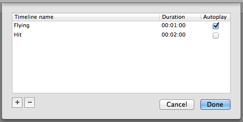
We want the Flying timeline to loop, so click the No chained timeline and select Flying. Now, switch to the new Hit timeline. Set the length of the timeline to 2 seconds and the chained timeline to Flying. When the dragon gets hit and we play back the Hit timeline it will automatically continue with the Flying one.
All that is left to do now is to create an animation for when the dragon gets hit. Move the timeline marker to the end of the timeline. Select each wing and add a rotation keyframe to them by pressing the R key. Now, move the marker to the beginning of the timeline. Rotate both wings down, I used a value of -123 and 123 respectively. Add a Bounce Out easing to each of the wings.
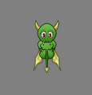
Select the dragon’s body sprite and move the timeline marker to 00:00:15. Add a keyframe for the sprite frame by pressing the F key. Now, move the timeline marker back to the beginning of the animation and add another keyframe for the sprite frame by pressing the F key. In the inspector, set the sprite frame to gameobjects.plist/dragon-body-hit.png. Try out the Hit timeline by clicking the play button.
What is an arcade game without the baddies? We need some cool bombs! Create a new file. Just like for the dragon, use a CCNode as root object, deselect the Full screen checkbox and select the iPhone resolution. Name the file Bomb and save it in the Resources folder. Select the root node and set the custom class to Bomb.
We are going to add some rotating spikes to our bomb. Set the length of the timeline to 2 seconds. Drag and drop the gameobjects.plist-bomb-spikes.png to the canvas and set its position to (0,0). Do the same with the gameobjects.plist/bomb-body.png. The body should be on top of the spikes.
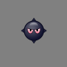
To make the bomb look more evil, we will let the spikes rotate around the body. Select the spikes sprite and move the timeline marker to the beginning of the timeline. Press the R key to add a keyframe from the rotation property. Finish off the animation by moving the timeline marker to the end of the timeline add a new keyframe (press the R key again) and set the rotation of the sprite to 360. Play back the animation to see the spikes rotate around the body.
Finally, make sure that the timeline loops automatically by clicking on the No chained timeline text and select Default timeline.
In our game we will use two kinds of coins; ordinary coins and end-coins. Taking a coin will give the dragon a short boost in speed and taking the end-coin will complete the level. We will use the same class for both types of coins, but add en extra property to the end coin so that we can distinguish them in our code.
Create a new file, use the same settings as for the dragon and the bomb (CCNode as root, full screen deselected and iPhone for resolution). Save the file as Coin in the Resources folder. Set the custom class of the root node to Coin.
Drag and drop the gameobjects.plist/coin01.png to the canvas area and set its position to (0,0). Now we want to add a frame based animation to the coin. Set the length of the timeline to 00:01:06. Make sure that the timeline marker is at the beginning of the timeline and that the coin sprite is selected. Now select all images from coin01.png to coin18.png in the project view.
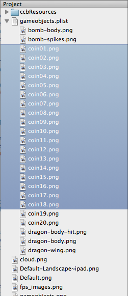
Choose Create Frames from Selected Resources from the Animation menu. This will add a series of keyframes to the sprite frame property of the coin sprite. The animation works, but is a little bit too fast. Select all the keyframes by dragging a selection box around them. Then, choose Stretch Selected Keyframes… from the Animation menu. Set the stretch factor to 2.0 and click Done. This will space out the keyframes and make the animation slower.
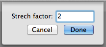
Just like with the bomb, finish off the file by setting the chained timeline to Default timeline to make the sequence loop. Save the file.
Now we are going to create the end-coin. Go to the Finder and duplicate the Coin.ccb file and rename the copy to EndCoin.ccb. Switch back to CocosBuilder and open the new file by double clicking it in the project view. To be able to tell the difference between the two types of coins we will be adding a custom property to the root node. Select the root node and click Edit Custom Properties in the inspector. Create a new property, change its name to isEndCoin, set the type to Bool and the value to 1. Click Done.
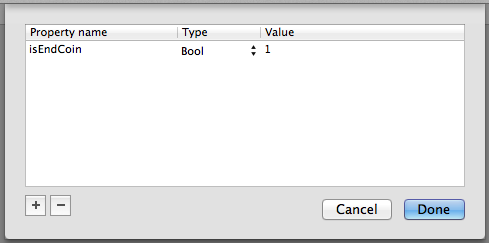
The custom property will be set on the custom class when the file is loaded in our app. To make the spinning coin visually different from the ordinary coins, select the coin and click the color well to bring up the color picker. Set the color like below, and we are done with with our different types of coins.
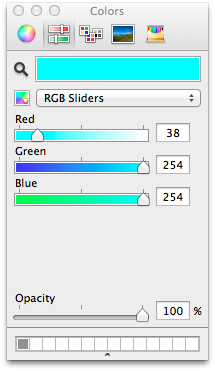
When a bomb explodes we need fancy looking explosions. We are going to do this using particle systems. Each explosion will be build from two particle systems.
Start by creating a new file, use the exact same settings as we did for the dragon, bomb and coin (CCNode as root, full screen deselected and iPhone for resolution), call the file Explosion. Set the length of the timeline to 2 seconds and the custom class of the root node to Explosion. Add two particle systems to the file by clicking the particle system icon in the toolbar twice.
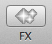
Use the following settings for each of the two particle systems. To try them out you can click the Start Particles button in the inspector.
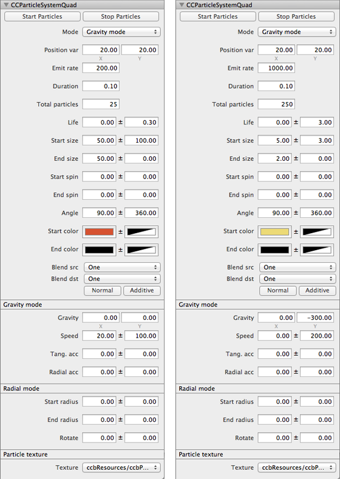
We are now done with all our game objects, the only interface file left to do is the level map. Create a new file. Make sure that CCLayer is selected for the root node and that full screen is selected. Select the iPhone Portrait resolution, but set the height to 4096.
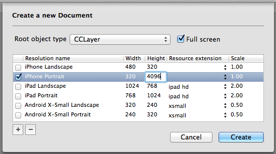
Save the file as Level in the Resources folder. Set the root node’s custom class to Level. We will now have a very tall document where we can start to place or game objects. Start by adding the dragon. From the project view, drag the Dragon.ccb file to the canvas. Select the dragon and set its position to (160,40). You may need to scroll down in the canvas area to see the dragon after you’ve moved it. We want the dragon to be easily accessed from our code, so in Code Connections select Doc root var from the drop down menu and enter dragon in the text field.
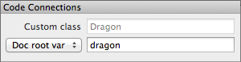
Now add more game objects by dragging and dropping them from the project view. In my case the beginning of the level looks like this:
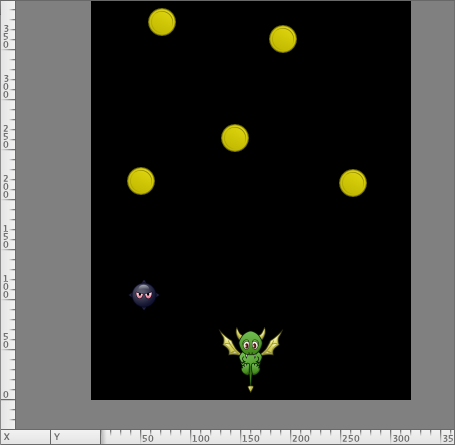
At the top of the level, place an EndCoin. When the dragon takes the end coin, the level is completed. When you are happy with the layout of your level (you may need to go back and tweak it at a later stage) make sure that all open files are saved. Now, select Publish from the File menu. This will publish all your files to the very compact binary ccbi-file format.
Now that we have created all the interface files for our game it is time to start coding. Open the Xcode project. Right click the Resources folder and select Add Files to “CocosDragon"…. Make sure that Create groups for any added folders is selected and that the CocosDragon target is selected. Add all the images files in the resource directory, the plist-files (sprite sheets) and all ccbi-files. You should not add the ccb-files, those are only used by CocosBuilder.
Next, we need to add the CCBReader to our project. The CCBReader is bundled with the example files in the folder Add to Your Project/cocos2d-iphone. Drag the complete CCBReader folder to your project, make sure that Create groups for any added folders is selected and Copy items into destination group’s folder is checked.
In Xcode, open the Prefix.pch file, it’s located in the Supporting Files group. Right below the imports for UIKit and Foundation import cocos2d.h. This is what it should look like:
#ifdef __OBJC__
#import <UIKit/UIKit.h>
#import <Foundation/Foundation.h>
#import "cocos2d.h"
#endif
We are now all setup to start coding. Let’s start by creating the main menu! Select New / File… from the File menu. Select Objective-C class, name the class MainMenuScene and make it a subclass of CCLayer.
At the top of MainMenuScene.m import CCBReader.h. We will also need to implement the callback that occurs when we press the play button that we added in the ccb-file. In the @implementation section of the .m file add the following code:
- (void) pressedPlay:(id)sender
{
// Load the game scene
CCScene* gameScene = [CCBReader sceneWithNodeGraphFromFile:@"GameScene.ccbi"];
// Go to the game scene
[[CCDirector sharedDirector] replaceScene:gameScene];
}
When we press the play button, we will first load the game scene from its ccbi-file, then tell the CCDirector to replace the current scene with the game scene. This is all code we need to add to the MainMenuScene, but we also need it to load when the game starts. Open the AppDelegate.m file. Import the CCBReader.h then replace the code that pushes the first scene with the following code:
// Load the main menu scene from the ccbi-file
CCScene* mainScene = [CCBReader sceneWithNodeGraphFromFile:@"MainMenuScene.ccbi"];
// Then add the scene to the stack. The director will run it when it automatically when the view is displayed.
[director_ pushScene: mainScene];
While still in the AppDelegate.m file replace the shouldAutorotateToInterfaceOrientation: method with the following method:
- (BOOL)shouldAutorotateToInterfaceOrientation:(UIInterfaceOrientation)interfaceOrientation
{
return UIInterfaceOrientationIsPortrait(interfaceOrientation);
}
This will make our game run in portrait mode instead of landscape. You can view the complete files at GitHub: MainMenuScene.m, MainMenuScene.h and AppDelegate.m.
When we press the play button in the game scene the GameScene.ccbi file will be loaded which will attempt to create an instance of the GameScene class. We will now create the GameScene class. Create a new class and call it GameScene, make it a subclass of CCLayer.
In CocosBuilder we added links to two member variables (levelLayer and scoreLabel). We need add them to the file. We will also load the Level dynamically and keep track of the current score. In GameScene.h add the following member variables to our class.
@interface GameScene : CCLayer
{
CCLayer* levelLayer;
CCLabelTTF* scoreLabel;
CCNode* level;
int score;
}
To easier access the score from other classes we will make it a property and add a method for retrieving the currently used instance of the GameScene class. We will also add methods for handling game over and when a level has been completed.
@property (nonatomic,assign) int score;
+ (GameScene*) sharedScene;
- (void) handleGameOver;
- (void) handleLevelComplete;
@end
We now need to implement the methods of the GameScene class. Open GameScene.m. At the top of the file import CCBReader.h. Before the implementation of the class add a static variable that will hold a reference to the shared instance of the class.
static GameScene* sharedScene;
In the implementation of the class implement the method that will return the shared instance.
+ (GameScene*) sharedScene
{
return sharedScene;
}
We also need to synthesize the score property.
@synthesize score;
When a ccbi-file is loaded, CCBReader will attempt to call the didLoadFromCCB method of every node that has been created. By implementing this method you will receive a callback when the file is completely loaded. We will use it to setup the current scene and load the level.
- (void) didLoadFromCCB
{
// Save a reference to the currently used instance of GameScene
sharedScene = self;
self.score = 0;
// Load the level
level = [CCBReader nodeGraphFromFile:@"Level.ccbi"];
// And add it to the game scene
[levelLayer addChild:level];
}
This code loads the Level.ccbi file and adds it as a child to the levelLayer that we created in CocosBuilder. In a real game we would probably have more than one level file and select different files when the player progresses through the game.
When the score property changes, we want to update the label that displays the score. We do that by implementing the setScore: method. Remember that we have already assigned scoreLabel in CocosBuilder.
- (void) setScore:(int)s
{
score = s;
[scoreLabel setString:[NSString stringWithFormat:@"%d",s]];
}
The only thing left to implement in our GameScene is the code for handling game over and level complete. In a real game you would probably do a bit more in these methods, but in this example we simply jump back to the main menu scene.
- (void) handleGameOver
{
[[CCDirector sharedDirector] replaceScene:[CCBReader sceneWithNodeGraphFromFile:@"MainMenuScene.ccbi"]];
}
- (void) handleLevelComplete
{
[[CCDirector sharedDirector] replaceScene:[CCBReader sceneWithNodeGraphFromFile:@"MainMenuScene.ccbi"]];
}
You can view the complete GameScene.m and GameScene.h at GitHub.
GameObject will be an abstract class that all of our game objects subclass from. It allows us to treat all game objects the same. Create a new class that subclasses from CCNode, call it GameObject. This class will contain a basic set of properties and methods that allows us to control the objects in our game. We set the isScheduledForRemove property if we want to remove an object. The update method is called once at every frame to update the game objects state. We will use the radius property for detecting collisions (in our game all game objects are treated as circular in shape). Finally if two game objects collide, the handleCollisionWith: method is called on both of the colliding objects. This is what our header file will look like:
@interface GameObject : CCNode
{
BOOL isScheduledForRemove;
}
@property (nonatomic,assign) BOOL isScheduledForRemove;
@property (nonatomic,readonly) float radius;
- (void) update;
- (void) handleCollisionWith:(GameObject*)gameObject;
@end
The .m file just implements empty methods, as this is an abstract class.
@implementation GameObject
@synthesize isScheduledForRemove;
// Update is called for every game object once every frame
- (void) update
{}
// If this game object has collided with another game object this method is called
- (void) handleCollisionWith:(GameObject *)gameObject
{}
// Returns the radius of this game object
- (float) radius
{
return 0;
}
@end
View the complete files: GameObject.m and GameObject.h
The dragon is our most complex game object. It controls the behavior of the main game character which the user will control. Create a new class, call it Dragon and make it a sub class of GameObject.
To control the movement of the dragon we need two variables, the vertical speed of the dragon, ySpeed and a horizontal target for the dragon to fly towards, xTarget. The xTarget will be set by the location of touches on the iPhones display. As the latter variable will be set from outside of this class we will make it a property. This is what we will add to the header file:
@interface Dragon : GameObject
{
float ySpeed;
float xTarget;
}
@property (nonatomic,assign) float xTarget;
@end
The .m file will be a little bit more interesting. Firstly we will interact with a number of other classes so we will need to import them. (We will make the Coin and Bomb classes right after we have finished the Dragon class.)
#import "Dragon.h"
#import "Coin.h"
#import "Bomb.h"
#import "GameScene.h"
#import "CCBAnimationManager.h"
Then, let’s define the constants that we will use to control the behavior of the dragon. It’s always a good practice to use constants so it is easy to tweak them when we try to get a good feel to the game.
#define kCJStartSpeed 8
#define kCJCoinSpeed 8
#define kCJStartTarget 160
#define kCJTargetFilterFactor 0.05
#define kCJSlowDownFactor 0.995
#define kCJGravitySpeed 0.1
#define kCJGameOverSpeed -10
#define kCJDeltaToRotationFactor 5
In the implementation of the Dragon class we will first synthesize the the xTarget property.
@synthesize xTarget;
Then we move on to the init method where we will initialize our member variables. The start for xTarget is 160, or the center of the screen.
- (id) init
{
self = [super init];
if (!self) return NULL;
xTarget = kCJStartTarget;
ySpeed = kCJStartSpeed;
return self;
}
We will use the update method to move our dragon smoothly over the screen. The update method will be called once every frame. We will calculate the new x position by using a filter function between the old position and the target position. The target is the place on the screen where the player has touched. The y position is calculated by adding the current speed to the old position. Then we updated the speed, we will increase the speed by adding a constant, but also use a factor to slow it down (this will prevent the dragon from approaching too fast speeds). We will also tilt the dragon sideways depending on the horizontal speed. If the vertical speed downwards is too high, it is game over.
- (void) update
{
// Calculate new position
CGPoint oldPosition = self.position;
float xNew = xTarget * kCJTargetFilterFactor + oldPosition.x * (1-kCJTargetFilterFactor);
float yNew = oldPosition.y + ySpeed;
self.position = ccp(xNew,yNew);
// Update the vertical speed
ySpeed = (ySpeed - kCJGravitySpeed) * kCJSlowDownFactor;
// Tilt the dragon depending on horizontal speed
float xDelta = xNew - oldPosition.x;
self.rotation = xDelta * kCJDeltaToRotationFactor;
// Check for game over
if (ySpeed < kCJGameOverSpeed)
{
[[GameScene sharedScene] handleGameOver];
}
}
In the Dragon class we will also need to handle collisions. We will detect which kind of object we have collided with and take different actions. If we collide with a coin we will increase the score and give the dragon an upwards speed boost. If we collide with a bomb, the dragon will loose speed and we will also play the Hit timeline of the dragon that we animated in CocosBuilder. We play the sequence by retrieving the CCBAnimationManager which is saved by CCBReader in the userObject and calling runAnimationsForSequenceNamed:.
- (void) handleCollisionWith:(GameObject *)gameObject
{
if ([gameObject isKindOfClass:[Coin class]])
{
// Took a coin
ySpeed = kCJCoinSpeed;
[GameScene sharedScene].score += 1;
}
else if ([gameObject isKindOfClass:[Bomb class]])
{
// Hit a bomb
if (ySpeed > 0) ySpeed = 0;
CCBAnimationManager* animationManager = self.userObject;
NSLog(@"animationManager: %@", animationManager);
[animationManager runAnimationsForSequenceNamed:@"Hit"];
}
}
Finally, we need to implement the radius property. This will be used for the collision handling.
- (float) radius
{
return 25;
}
Complete Dragon class: Dragon.m and Dragon.h
The coins has a rather simple logic, they should be removed when they collide with the dragon. If an end-coin collide with the dragon, the level is complete. Create a new class called Coin and make it a subclass of GameObject. In CocosBuilder we added a custom property, isEndCoin, for the end-coin, but used the same custom class as for ordinary coins. We will need to implement the property in our class. This is what our header file will look like:
@interface Coin : GameObject
{
BOOL isEndCoin;
}
@property (nonatomic,assign) BOOL isEndCoin;
@end
In the .m file we will first need to synthesize the isEndCoin property.
@synthesize isEndCoin;
We are not going to move the coin around, so we will not need to implement the update method. However, we do want to remove the coin if it collides with the dragon. Also, if it is the end-coin we want the level to be complete.
- (void) handleCollisionWith:(GameObject *)gameObject
{
if ([gameObject isKindOfClass:[Dragon class]])
{
if (isEndCoin)
{
// Level is complete!
[[GameScene sharedScene] handleLevelComplete];
}
self.isScheduledForRemove = YES;
}
}
Finally, let’s set the radius of the coin.
- (float) radius
{
return 15;
}
Complete Coin class: Coin.m and Coin.h
Bombs are the obstacles in our game. Create a new class called Bomb and make it a subclass of GameObject. The bombs will explode when they collide with the player. We do this by removing the bomb and replacing it with an explosion that we load dynamically. We are not adding any new properties, so you can leave the header file without modifications. In the .m file we will need to implement the handleCollisionsWith: method.
- (void) handleCollisionWith:(GameObject *)gameObject
{
if ([gameObject isKindOfClass:[Dragon class]])
{
// Collided with the dragon, remove object and add an explosion instead
self.isScheduledForRemove = YES;
CCNode* explosion = [CCBReader nodeGraphFromFile:@"Explosion.ccbi"];
explosion.position = self.position;
[self.parent addChild:explosion];
}
}
Then, we need to set the radius of the bomb.
- (float) radius
{
return 15;
}
Complete Bomb class: Bomb.m and Bomb.h
The final game game object we are going to implement is the Explosion. The explosions will not interact with any other game objects. But we will make it remove itself once it has finished playing. To do this we will have to implement the CCBAnimationManagerDelegate. In the header file, first import CCBAnimationManagerDelegate.h, then add it to the Explosion as a protocol.
#import "CCBAnimationManager.h"
@interface Explosion : GameObject <CCBAnimationManagerDelegate>
@end
In the .m file, we will assign the Explosion class to be a delegate of the CCBActionManager that is created when the explosion is loaded. We will do this in the didLoadFromCCB method.
- (void) didLoadFromCCB
{
// Setup a delegate method for the animationManager of the explosion
CCBAnimationManager* animationManager = self.userObject;
animationManager.delegate = self;
}
Now when the animation finishes playing we will receive a callback, completedAnimationSequenceNamed:. Implement the callback and have it schedule the explosion for removal.
- (void) completedAnimationSequenceNamed:(NSString *)name
{
// Remove the explosion object after the animation has finished
self.isScheduledForRemove = YES;
}
Complete Explosion class: Explosion.m and Explosion.h
The only class we have left to implement is the Level class. The level will handle all touch input from the player and being responsible for updating and removing our game objects. Create the Level class and make it a subclass of CCLayer. In CocosBuilder we added a member variable, dragon, so we will need to add that in our header file.
@class Dragon;
@interface Level : CCLayer
{
Dragon* dragon;
}
@end
Now in the .m file we will need to import the classes that we are planning on accessing.
#import "Dragon.h"
#import "GameObject.h"
We will also define two constants which we will use for scrolling the layer so that the dragon always is visible.
#define kCJScrollFilterFactor 0.1
#define kCJDragonTargetOffset 80
We use the onEnter method to setup a callback to update: before every frame in the game is rendered. In onExit we remove the callback.
- (void) onEnter
{
[super onEnter];
// Schedule a selector that is called every frame
[self schedule:@selector(update:)];
// Make sure touches are enabled
self.isTouchEnabled = YES;
}
- (void) onExit
{
[super onExit];
// Remove the scheduled selector
[self unscheduleAllSelectors];
}
In the update: method we will update all our game objects. Remember that we added the game objects as children to the level in CocosBuilder. After the objects are updated and has new positions we will check for collisions. In this game we only check for collisions with the dragon as it is the only object that moves. In other games, you may need to write more advanced code for the collision detection or use a physics engine such as Chipmunk or Box2d. When, all collisions are handled we will iterate through all game objects to see which objects are scheduled for removal. We make an array of those objects and use this list to remove them. Finally, we adjust the position of the layer so that the dragon is always visible. When adjusting the position we use a filter factor to make the movements smoother.
- (void) update:(ccTime)delta
{
// Iterate through all objects in the level layer
CCNode* child;
CCARRAY_FOREACH(self.children, child)
{
// Check if the child is a game object
if ([child isKindOfClass:[GameObject class]])
{
GameObject* gameObject = (GameObject*)child;
// Update all game objects
[gameObject update];
// Check for collisions with dragon
if (gameObject != dragon)
{
if (ccpDistance(gameObject.position, dragon.position) < gameObject.radius + dragon.radius)
{
// Notify the game objects that they have collided
[gameObject handleCollisionWith:dragon];
[dragon handleCollisionWith:gameObject];
}
}
}
}
// Check for objects to remove
NSMutableArray* gameObjectsToRemove = [NSMutableArray array];
CCARRAY_FOREACH(self.children, child)
{
if ([child isKindOfClass:[GameObject class]])
{
GameObject* gameObject = (GameObject*)child;
if (gameObject.isScheduledForRemove)
{
[gameObjectsToRemove addObject:gameObject];
}
}
}
for (GameObject* gameObject in gameObjectsToRemove)
{
[self removeChild:gameObject cleanup:YES];
}
// Adjust the position of the layer so dragon is visible
float yTarget = kCJDragonTargetOffset - dragon.position.y;
CGPoint oldLayerPosition = self.position;
float xNew = oldLayerPosition.x;
float yNew = yTarget * kCJScrollFilterFactor + oldLayerPosition.y * (1.0f - kCJScrollFilterFactor);
self.position = ccp(xNew, yNew);
}
The last thing we will need to do is to make the game respond to the players touches. We implement the ccTouchesBegan:withEvent: and ccTouchesMoved:withEvent: methods to get the touches positions and set the xTarget property of the dragon.
- (void) ccTouchesBegan:(NSSet *)touches withEvent:(UIEvent *)event
{
UITouch* touch = [touches anyObject];
CGPoint touchLocation = [touch locationInView: [touch view]];
dragon.xTarget = touchLocation.x;
}
- (void) ccTouchesMoved:(NSSet *)touches withEvent:(UIEvent *)event
{
UITouch* touch = [touches anyObject];
CGPoint touchLocation = [touch locationInView: [touch view]];
dragon.xTarget = touchLocation.x;
}
Complete Level class: Level.m and Level.h
With all CocosBuilder files created and the classes for the game written you should be able to compile and run the game, either in the iOS simulator or on your device. Thank you taking the time to read through the tutorial and happy coding!